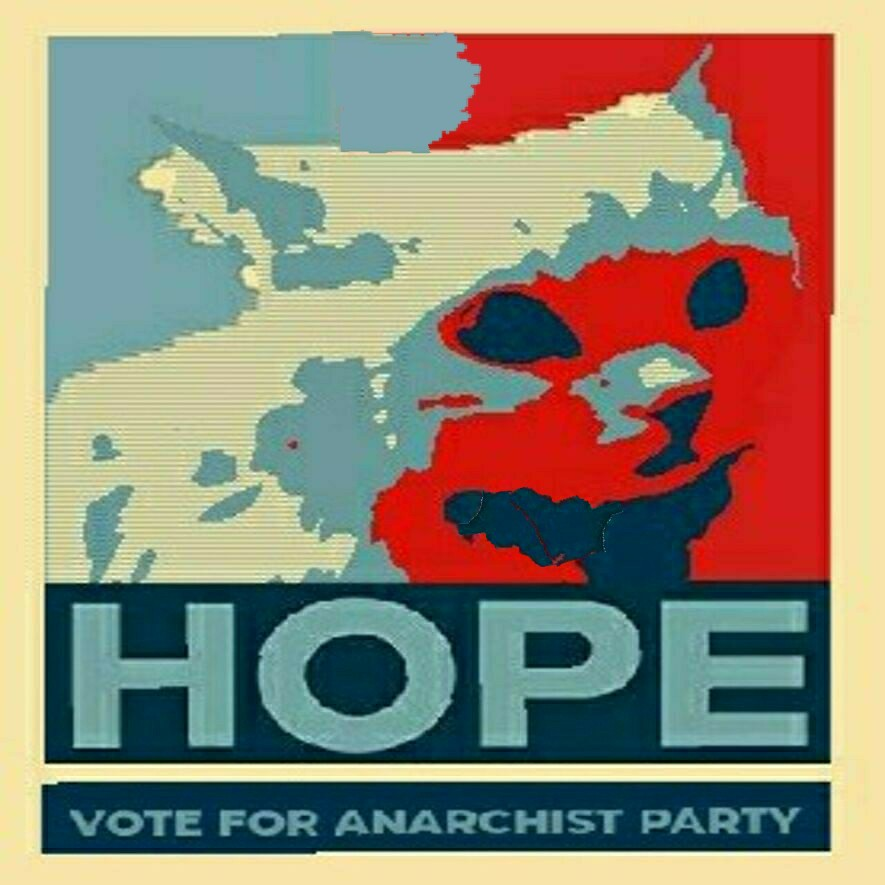
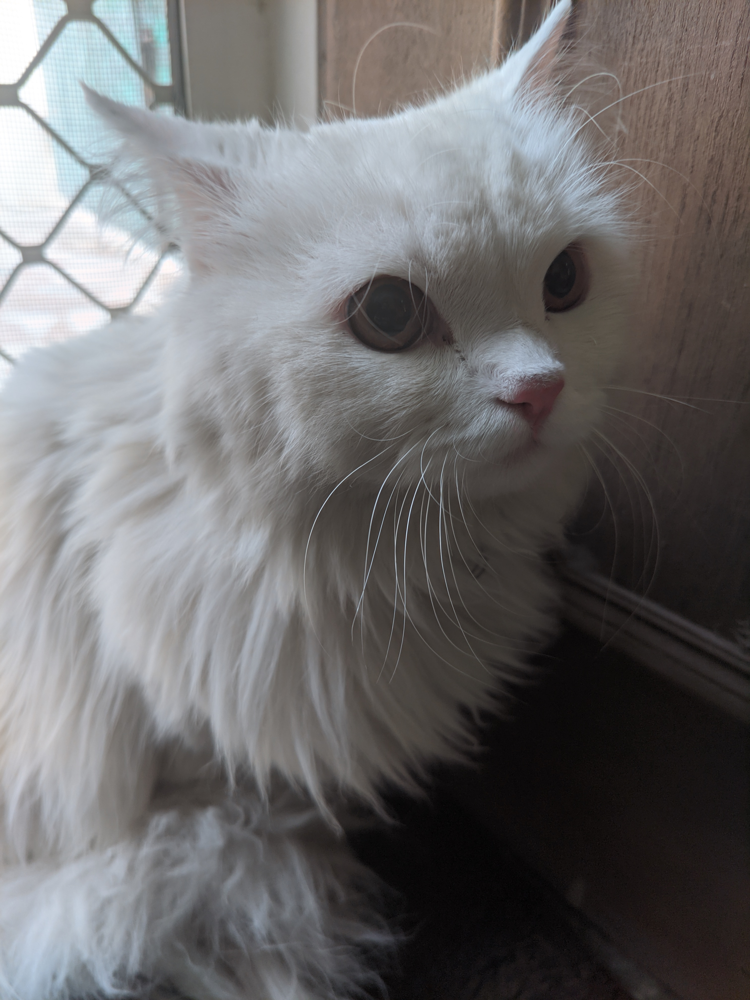

Don't tolerate interfere of other non CPE votes with the election of your pressident.
Dont let our president be someone with only 2 players with him.
Join us. As we prepare for a more
transparent, fair and foolproof method of Voting
Anarchist party's main goal is to make cpe a better place. For everyone. Give the power back to the players.
Map Art

Mascot
